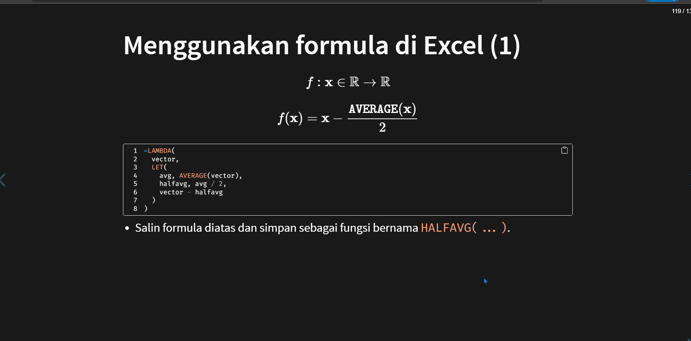

Greenhorn:
feidlambda II
Exploring Dynamic Array + User Defined Lambda (UDL)
v1.0 -> 25 Oktober 2022
[v2.0 -> 8 November 2022]
11/8/22
Kegiatan
Greenhorn
Topik
Exploring Dynamic Array and User Defined Lambda (UDL)
Memanfaatkan Dynamic Array dan User-Defined LAMBDA (UDL)
Author
Bahan presentasi dibuat oleh Taruma Sakti Megariansyah
Lisensi
Seluruh materi presentasi menggunakan lisensi CC-BY-NC-SA 4.0
Kontak
Agenda
Agenda untuk Greenhorn feidlambda II: Exploring Dynamic Array + User Defined Lambda (UDL)
- Review Daftar Istilah
- Eksplorasi tentang Logical
- Dynamic Array Formula (DAF)
- Fungsi Baru dari Excel 2019 dan 2021
- User Defined
Lambda(UDL)
1 Review Daftar Istilah
Vector dan Array
- Istilah array dapat diartikan range yang memiliki 1 dimensi atau 2 dimensi.
- Array dapat dibangkitkan menggunakan sintaks “
={...}”. Dengan “,” sebagai pemisah kolom (sepanjang baris), “;” sebagai pemisah baris (sepanjang kolom).
\[ \texttt{{1,2,3}} = \begin{bmatrix} 1 & 2 & 3 \end{bmatrix} , \texttt{{1;2;3}} = \begin{bmatrix} 1\\ 2\\ 3 \end{bmatrix} \]
\[ \texttt{\{} \underbrace{\texttt{1,2,3}}_{\textit{baris ke-}1} \texttt{;} \underbrace{\texttt{4,5,6}}_{\textit{baris ke-}2} \texttt{;} \underbrace{\texttt{7,8,9}}_{\textit{baris ke-}3} \texttt{\}} = \begin{bmatrix} 1 & 2 & 3\\ 4 & 5 & 6\\ 7 & 8 & 9 \end{bmatrix} \]
2 Eksplorasi tentang Logical
Eksplorasi mengenai fungsi yang menghasilkan logical yaitu TRUE atau FALSE.
Fungsi Logical
NOT(...), AND(...), OR(...), XOR(...)
Fungsi NOT(...)
NOT (1)
Syntax
- Fungsi
NOTmembalikkan nilai argumennya. 1 - Menghasilkan nilai
TRUEketika kondisi bernilaiFALSE, dan berlaku sebaliknya. NOT(TRUE) = FALSENOT(FALSE) = TRUE
NOT (2)
\[ \texttt{NOT} \left( \begin{bmatrix} \texttt{TRUE}\\ \texttt{FALSE}\\ \texttt{TRUE} \end{bmatrix} \right) = \begin{bmatrix} \texttt{FALSE}\\ \texttt{TRUE}\\ \texttt{FALSE} \end{bmatrix} \]
\[ \texttt{NOT} \left( \begin{bmatrix} \texttt{TRUE} & \texttt{FALSE} & \texttt{TRUE} \end{bmatrix} \right) = \begin{bmatrix} \texttt{FALSE} & \texttt{TRUE} & \texttt{FALSE} \end{bmatrix} \]
\[ \texttt{NOT} \left( \begin{bmatrix} \texttt{TRUE} & \texttt{FALSE}\\ \texttt{FALSE} & \texttt{TRUE}\\ \end{bmatrix} \right) = \begin{bmatrix} \texttt{FALSE} & \texttt{TRUE}\\ \texttt{TRUE} & \texttt{FALSE} \end{bmatrix} \]
Fungsi AND(...)
AND (1)
- Fungsi logika, untuk menentukan apakah semua kondisi dalam sebuah tes adalah
TRUE. 1
- Menghasilkan nilai
TRUEketika seluruh kondisi bernilaiTRUE. Jika terdapat satu atau lebih bernilaiFALSEmaka menghasilkan nilaiFALSE. - Jika input berupa logical array saja (
AND(logical_array)), maka akan mengevaluasi seluruh elemen pada logical array (AND(elemen_1, elemen_2, ...)).
AND (2)
\[ \texttt{AND} \left( \texttt{TRUE}, \texttt{TRUE} \right) = \texttt{AND} \left( \texttt{TRUE}, \texttt{TRUE}, \texttt{TRUE} \right) = \texttt{TRUE} \]
\[ \texttt{AND} \left( \texttt{TRUE}, \texttt{FALSE} \right) = \texttt{AND} \left( \texttt{TRUE}, \texttt{FALSE}, \texttt{TRUE} \right) = \texttt{FALSE} \]
\[ \texttt{AND} \left( \texttt{FALSE}, \texttt{FALSE} \right) = \texttt{AND} \left( \texttt{FALSE}, \texttt{FALSE}, \texttt{FALSE} \right) = \texttt{FALSE} \]
AND (3)
\[ \texttt{AND} \left( \begin{bmatrix} \texttt{TRUE} & \texttt{FALSE} & \texttt{TRUE} \end{bmatrix} \right) = \texttt{AND} \left( \texttt{TRUE}, \texttt{FALSE}, \texttt{TRUE} \right) = \texttt{FALSE} \]
\[ \texttt{AND} \left( \begin{bmatrix} \texttt{TRUE} \\ \texttt{TRUE} \\ \texttt{TRUE} \end{bmatrix} \right) = \texttt{AND} \left( \texttt{TRUE}, \texttt{TRUE}, \texttt{TRUE} \right) = \texttt{TRUE} \]
\[ \texttt{AND} \left( \begin{bmatrix} \texttt{TRUE} & \texttt{FALSE} \\ \texttt{FALSE} & \texttt{TRUE} \end{bmatrix} \right) = \texttt{AND} \left( \texttt{TRUE}, \texttt{FALSE}, \texttt{FALSE}, \texttt{TRUE} \right) = \texttt{FALSE} \]
\[ \texttt{AND} \left( \begin{bmatrix} \texttt{TRUE} \\ \texttt{FALSE} \end{bmatrix} , \begin{bmatrix} \texttt{TRUE} \\ \texttt{FALSE} \end{bmatrix} \right) = \texttt{AND} \left( \texttt{TRUE}, \texttt{FALSE}, \texttt{TRUE}, \texttt{FALSE} \right) = \texttt{FALSE} \]
Fungsi OR(...)
OR (1)
- Fungsi logika, untuk menentukan apakah salah satu kondisi dalam sebuah tes adalah
TRUE. 1
- Menghasilkan nilai
TRUEketika salah satu kondisi bernilaiTRUE. - Jika input berupa logical array saja (
OR(logical_array)), maka akan mengevaluasi seluruh elemen pada logical array (OR(elemen_1, elemen_2, ...)).
OR (2)
\[ \texttt{OR} \left( \texttt{TRUE}, \texttt{TRUE} \right) = \texttt{OR} \left( \texttt{TRUE}, \texttt{TRUE}, \texttt{TRUE} \right) = \texttt{TRUE} \]
\[ \texttt{OR} \left( \texttt{TRUE}, \texttt{FALSE} \right) = \texttt{OR} \left( \texttt{TRUE}, \texttt{FALSE}, \texttt{TRUE} \right) = \texttt{TRUE} \]
\[ \texttt{OR} \left( \texttt{FALSE}, \texttt{FALSE} \right) = \texttt{OR} \left( \texttt{FALSE}, \texttt{FALSE}, \texttt{FALSE} \right) = \texttt{FALSE} \]
OR (3)
\[ \texttt{OR} \left( \begin{bmatrix} \texttt{TRUE} & \texttt{FALSE} & \texttt{TRUE} \end{bmatrix} \right) = \texttt{OR} \left( \texttt{TRUE}, \texttt{FALSE}, \texttt{TRUE} \right) = \texttt{TRUE} \]
\[ \texttt{OR} \left( \begin{bmatrix} \texttt{TRUE} \\ \texttt{TRUE} \\ \texttt{TRUE} \end{bmatrix} \right) = \texttt{OR} \left( \texttt{TRUE}, \texttt{TRUE}, \texttt{TRUE} \right) = \texttt{TRUE} \]
\[ \texttt{OR} \left( \begin{bmatrix} \texttt{TRUE} & \texttt{FALSE} \\ \texttt{FALSE} & \texttt{TRUE} \end{bmatrix} \right) = \texttt{OR} \left( \texttt{TRUE}, \texttt{FALSE}, \texttt{FALSE}, \texttt{TRUE} \right) = \texttt{TRUE} \]
\[ \texttt{OR} \left( \begin{bmatrix} \texttt{TRUE} \\ \texttt{FALSE} \end{bmatrix} , \begin{bmatrix} \texttt{TRUE} \\ \texttt{FALSE} \end{bmatrix} \right) = \texttt{OR} \left( \texttt{TRUE}, \texttt{FALSE}, \texttt{TRUE}, \texttt{FALSE} \right) = \texttt{TRUE} \]
Fungsi XOR(...)
XOR (1)
- Fungsi
XORmengembalikan logika Exclusive Or dari semua argumen. 1
- Menghasilkan nilai
TRUEketika hanya satu kondisi bernilaiTRUE. - Jika input berupa logical array saja (
XOR(logical_array)), maka akan mengevaluasi seluruh elemen pada logical array (XOR(elemen_1, elemen_2, ...)).
XOR (2)
\[ \texttt{XOR} \left( \texttt{TRUE}, \texttt{TRUE} \right) = \texttt{XOR} \left( \texttt{TRUE}, \texttt{TRUE}, \texttt{TRUE} \right) = \texttt{FALSE} \]
\[ \texttt{XOR} \left( \texttt{TRUE}, \texttt{FALSE} \right) = \texttt{XOR} \left( \texttt{TRUE}, \texttt{FALSE}, \texttt{FALSE} \right) = \texttt{TRUE} \]
\[ \texttt{XOR} \left( \texttt{TRUE}, \texttt{FALSE}, \texttt{TRUE} \right) = \texttt{FALSE} \]
\[ \texttt{XOR} \left( \texttt{FALSE}, \texttt{FALSE} \right) = \texttt{XOR} \left( \texttt{FALSE}, \texttt{FALSE}, \texttt{FALSE} \right) = \texttt{FALSE} \]
XOR (3)
\[ \texttt{XOR} \left( \begin{bmatrix} \texttt{TRUE} & \texttt{FALSE} & \texttt{TRUE} \end{bmatrix} \right) = \texttt{XOR} \left( \texttt{TRUE}, \texttt{FALSE}, \texttt{TRUE} \right) = \texttt{FALSE} \]
\[ \texttt{XOR} \left( \begin{bmatrix} \texttt{TRUE} \\ \texttt{FALSE} \\ \texttt{FALSE} \end{bmatrix} \right) = \texttt{XOR} \left( \texttt{TRUE}, \texttt{FALSE}, \texttt{FALSE} \right) = \texttt{TRUE} \]
\[ \texttt{XOR} \left( \begin{bmatrix} \texttt{TRUE} & \texttt{FALSE} \\ \texttt{FALSE} & \texttt{TRUE} \end{bmatrix} \right) = \texttt{XOR} \left( \texttt{TRUE}, \texttt{FALSE}, \texttt{FALSE}, \texttt{TRUE} \right) = \texttt{FALSE} \]
\[ \texttt{XOR} \left( \begin{bmatrix} \texttt{TRUE} \\ \texttt{FALSE} \end{bmatrix} , \begin{bmatrix} \texttt{FALSE} \\ \texttt{FALSE} \end{bmatrix} \right) = \texttt{XOR} \left( \texttt{TRUE}, \texttt{FALSE}, \texttt{FALSE}, \texttt{FALSE} \right) = \texttt{TRUE} \]
Logical \(\iff\) Number
Logical \(\Rightarrow\) Number (1)
\(\texttt{FALSE} = 0\). Bernilai
FALSEjika bernilai0. \(\{ x = 0 \}\)\(\texttt{TRUE} \neq 0\). Bernilai
TRUEjika nilai bukan0. \(\{ x \in \mathbb{R}\ |\ x \neq 0 \}\)Mengubah logical menjadi number dapat menggunakan fungsi
INT(...). 1\(\texttt{INT}(\texttt{TRUE}) = 1\).
\(\texttt{INT}(\texttt{FALSE}) = 0\).
Logical dan operator aritmatika (1)
- Logical array akan diubah menjadi numeric array ketika bertemu operator aritmatika (
+,*,-,/). - Perubahan logical menjadi number sama dengan proses penggunaan fungsi
INT(...). - Operator aritmatika perkalian (
*/ \(\times\)) dan penambahan (+) dapat berperilaku seperti fungsi logicalAND(*) danOR(+). - Umumnya operator perkalian setiap elemen dalam suatu vector atau matriks (array) menggunakan simbol \(\odot\). Akan tetapi, pada materi ini simbol \(\times\) diartikan sebagai perkalian setiap elemen (element-wise) dan bukan perkalian matriks.
Logical dan operator aritmatika (2)
\[ \mathbf{X} \underbrace{\textsf{ operator }}_{\times\ |\ +} \mathbf{Y} \Rightarrow \mathbf{P} \underbrace{\textsf{ operator }}_{\times\ |\ +} \mathbf{Q} \]
\[ \mathbf{X} \in \mathbb{B}_l, \mathbf{Y} \in \mathbb{B}_l, \mathbf{P} \in \mathbb{B}_i, \mathbf{Q} \in \mathbb{B}_i \]
- Simbol \(\mathbb{B}\) untuk menyatakan nilai logical atau boolean. 1
\[ \mathbb{B}_l = \{ \texttt{TRUE, FALSE} \} = \{ \text{T}, \text{F} \} , \mathbb{B}_i = \{ 0, 1 \} \]
\[ \overbrace{ \begin{bmatrix} \texttt{TRUE}\\ \texttt{FALSE}\\ \texttt{FALSE} \end{bmatrix} }^{\text{logical array}} \underbrace{\ \times\ |\ +\ }_\text{operator} \overbrace{ \begin{bmatrix} \texttt{TRUE}\\ \texttt{TRUE}\\ \texttt{FALSE} \end{bmatrix} }^{\text{logical array}} \Rightarrow \overbrace{ \begin{bmatrix} 1\\ 0\\ 0 \end{bmatrix} }^{\text{numeric array}} \underbrace{\ \times\ |\ +\ }_\text{operator} \overbrace{ \begin{bmatrix} 1\\ 1\\ 0 \end{bmatrix} }^{\text{numeric array}} \]
Operator perkalian
Operator perkalian * sebagai AND (1)
- Setiap nilai yang dikalikan dengan
0akan bernilai0.
\[ x \times 0 = 0,\ \{x \in \mathbb{R}\} \]
- Setiap nilai yang dikalikan dengan
FALSEakan bernilaiFALSE.
Operator perkalian * sebagai AND (2)
\[ \begin{bmatrix} \texttt{TRUE}\\ \texttt{FALSE}\\ \texttt{FALSE} \end{bmatrix} \times \begin{bmatrix} \texttt{TRUE}\\ \texttt{TRUE}\\ \texttt{FALSE} \end{bmatrix} \Rightarrow \begin{bmatrix} 1\\ 0\\ 0 \end{bmatrix} \times \begin{bmatrix} 1\\ 1\\ 0 \end{bmatrix} = \underbrace{ \begin{bmatrix} 1\\ 0\\ 0 \end{bmatrix} }_{\textit{hasil akhir}} \]
\[ \Rightarrow \underbrace{ \left( \begin{bmatrix} 1\\ 0\\ 0 \end{bmatrix} \neq 0 \right) }_{\textit{mengubah menjadi logical}} = \begin{bmatrix} \texttt{TRUE}\\ \texttt{FALSE}\\ \texttt{FALSE} \end{bmatrix} \]
Operator penambahan
Operator penambahan + sebagai OR (1)
- Berlaku seperti penambahan pada umumnya.
\[ x + 0 = x, x \in \mathbb{R} \]
\[ x + y = x + y, x \in \mathbb{R}, y \in \mathbb{R} \]
- Setiap nilai yang bukan
0bernilaiTRUE. \(\texttt{TRUE} \neq 0\)
Operator penambahan + sebagai OR (2)
\[ \begin{bmatrix} \texttt{TRUE}\\ \texttt{FALSE}\\ \texttt{FALSE} \end{bmatrix} + \begin{bmatrix} \texttt{TRUE}\\ \texttt{TRUE}\\ \texttt{FALSE} \end{bmatrix} \Rightarrow \begin{bmatrix} 1\\ 0\\ 0 \end{bmatrix} + \begin{bmatrix} 1\\ 1\\ 0 \end{bmatrix} = \underbrace{ \begin{bmatrix} 2\\ 1\\ 0 \end{bmatrix} }_{\textit{hasil akhir}} \]
\[ \Rightarrow \underbrace{ \left( \begin{bmatrix} 2\\ 1\\ 0 \end{bmatrix} \neq 0 \right) }_{\textit{mengubah menjadi logical}} = \begin{bmatrix} \texttt{TRUE}\\ \texttt{TRUE}\\ \texttt{FALSE} \end{bmatrix} \]
Number \(\Rightarrow\) Logical
Number \(\Rightarrow\) Logical (1)
- Numeric array dapat digunakan sebagai kondisi logical.
- Setiap numeric array yang digunakan sebagai conditional secara tidak langsung berubah menjadi logical array.
- Perubahan tersebut sama saja jika membandingkan array tidak sama dengan
0. \[ \left( \mathbf{x}_{\text{number}} \neq 0 \right) = \mathbf{x}_{\text{logical}} \]
Number \(\Rightarrow\) Logical (2)
\[ \texttt{NOT} \left( \underbrace{ \begin{bmatrix} 3\\ -1\\ 0 \end{bmatrix} }_{\textit{numeric}} \equiv 0 \right) = \left( \underbrace{ \begin{bmatrix} 3\\ -1\\ 0 \end{bmatrix} }_{\textit{numeric}} \neq 0 \right) = \underbrace{ \begin{bmatrix} \texttt{TRUE}\\ \texttt{TRUE}\\ \texttt{FALSE} \end{bmatrix} }_{\textit{logical}} \]
- Sama saja dengan formula
=NOT(array=0)atau=array<>0.
Number \(\Rightarrow\) Logical (2)
\[ \texttt{IF} \left( \underbrace{ \begin{bmatrix} 3\\ -1\\ 0 \end{bmatrix} }_{\textit{numeric}} , \underbrace{\dots}_{\texttt{TRUE}} , \underbrace{\dots}_{\texttt{FALSE}} \right) \Rightarrow \texttt{IF} \left( \underbrace{ \begin{bmatrix} \texttt{TRUE}\\ \texttt{TRUE}\\ \texttt{FALSE} \end{bmatrix} }_{\textit{logical}} , \underbrace{\dots}_{\texttt{TRUE}} , \underbrace{\dots}_{\texttt{FALSE}} \right) \]
Yang perlu diperhatikan
- Hasil dari logical array bertemu dengan operator aritmatika selalu numeric array.
\[ \begin{bmatrix} \texttt{TRUE}\\ \texttt{FALSE}\\ \texttt{FALSE} \end{bmatrix} \times \begin{bmatrix} \texttt{TRUE}\\ \texttt{TRUE}\\ \texttt{FALSE} \end{bmatrix} + \begin{bmatrix} \texttt{FALSE}\\ \texttt{TRUE}\\ \texttt{TRUE} \end{bmatrix} \Rightarrow \begin{bmatrix} 1\\ 0\\ 0 \end{bmatrix} \times \begin{bmatrix} 1\\ 1\\ 0 \end{bmatrix} + \begin{bmatrix} 0\\ 1\\ 1 \end{bmatrix} = \begin{bmatrix} 1\\ 1\\ 1 \end{bmatrix} \]
- Jika numeric array digunakan sebagai argumen conditional, maka akan dikonversikan menjadi logical array.
Mengenal Fungsi IS*(...)
Kumpulan fungsi logika untuk mevalidasi input.
Fungsi IS*(...)
SYNTAX
- Memeriksa nilai tertentu dan mengembalikan
TRUEatauFALSEbergantung pada hasilnya. 1 ISBLANK(...)bernilaiTRUEjika sel kosong.ISNUMBER(...)bernilaiTRUEjika sel berisikan angka.
Koleksi Fungsi IS*
Periksa error / kosong
ISNA(...): Cek nilai apakah#N/A.ISERR(...): Cek nilai apakah error selain#N/A(#VALUE!,#REF!,#DIV/0!,#NUM!,#NAME?, atau#NULL!).ISERROR(...): Cek nilai apakah error (seluruh jenis error).ISBLANK(...): Cek nilai apakah kosong.
Periksa jenis sel
ISLOGICAL(...): Cek nilai apakah logical (TRUEatauFALSE).ISNUMBER(...): Cek nilai apakah angka (\(\mathbb{R}\)).ISTEXT(...): Cek nilai apakah teks. DanISNONTEXT(...): Cek niai apakah bukan teks (number, logical, error)ISFORMULA(...): Cek nilai apakah formula.
Periksa jenis bilangan
ISEVEN(...): Cek nilai apakah bilangan genap.ISODD(...): Cek nilai apakah bilangan ganjil.
Validasi input dengan ISNUMBER(...)
Validasi dengan ISNUMBER(...) (1)
\[ f : \mathbb{R} \to \mathbb{R} \]
\[ f(\mathbf{x}) = \mathbf{y} = \mathbf{x} + 2 \]
\[ \mathbf{x} \in \mathbb{R}, \mathbf{y} \in \mathbb{R} \]
\[ \mathbf{x} \mapsto \mathbf{x} + 2 \]
- Umumnya nilai \(\mathbf{y}\) dihitung dengan formula
=x+2dengan asumsi \(\mathbf{x}\) bernilai angka \(\{ \mathbf{x} \in \mathbb{R} \}\).
\[ \mathbf{x} = \begin{bmatrix} 3 \\ 2 \\ 7 \end{bmatrix} \mapsto f(\mathbf{x}) = \begin{bmatrix} 3 \\ 2 \\ 7 \end{bmatrix} + 2 = \begin{bmatrix} 5 \\ 4 \\ 9 \end{bmatrix} \]
Validasi dengan ISNUMBER(...) (2)
- Bagaimana jika \(\mathbf{x}\) memiliki elemen yang bukan angka yaitu text / error / logical?
\[ \mathbf{x} = \begin{bmatrix} 3 \\ \textrm{bob} \\ 2 \end{bmatrix} \mapsto f(\mathbf{x}) = \begin{bmatrix} 3 \\ \textrm{bob} \\ 2 \end{bmatrix} + 2 = \begin{bmatrix} 5 \\ \texttt{#VALUE!} \\ 2 \end{bmatrix} \]
Validasi dengan ISNUMBER(...) (3)
- Validasi input menggunakan
ISNUMBER(...)
\[ \mathbf{x} = \begin{bmatrix} 3 \\ \textrm{bob} \\ 2 \end{bmatrix} \mapsto \texttt{ISNUMBER} \left( \mathbf{x} \right) = \texttt{ISNUMBER} \left( \begin{bmatrix} 3 \\ \textrm{bob} \\ 2 \end{bmatrix} \right) = \begin{bmatrix} \texttt{TRUE} \\ \texttt{FALSE} \\ \texttt{TRUE} \end{bmatrix} \]
\[ \begin{bmatrix} \texttt{TRUE} \\ \texttt{FALSE} \\ \texttt{TRUE} \end{bmatrix} \mapsto \texttt{AND} \left( \mathbf{x} \right) = \texttt{AND} \left( \begin{bmatrix} \texttt{TRUE} \\ \texttt{FALSE} \\ \texttt{TRUE} \end{bmatrix} \right) = \texttt{FALSE} \]
\[ \mathbf{x} \mapsto \texttt{AND}( \texttt{ISNUMBER}( \mathbf{x} ) ) = \texttt{AND}( \texttt{ISNUMBER}( \begin{bmatrix} 3 \\ \textrm{bob} \\ 2 \end{bmatrix} ) ) = \texttt{FALSE} \]
Validasi dengan ISNUMBER(...) (4)
\[ \begin{equation} \mathbf{x} \mapsto \texttt{AND} ( \texttt{ISNUMBER}(\mathbf{x}) ) = \begin{cases} \texttt{TRUE} & f : \mathbf{x} \in \mathbb{R} \rightarrow \mathbb{R}\\ \texttt{FALSE} & \textrm{return}\ \texttt{#VALUE!} \\ \texttt{FALSE} & \mathbf{x} \mapsto g(\mathbf{x}) = \texttt{FILTER}(\dots) \mapsto \\ & f: g(\mathbf{x}) \in \mathbb{R} \rightarrow \mathbb{R}\\ \end{cases} \end{equation} \]
- Validasi ini dapat diimplementasikan ketika terdapat ketidakpastian jika \(\mathbf{x}\) dapat bernilai bukan angka (\(\mathbf{x} \in \mathbb{R} \lor \mathbf{x} \notin \mathbb{R}\))
- Solusi lain dengan melakukan filter pada \(\mathbf{x}\) dan hanya mengambil elemen yang angka dengan
FILTER(...).
3 Dynamic Array Formula (DAF)
Koleksi fungsi baru (Excel 2021) yang memanfaatkan dynamic array.
Menyeleksi/memilih data
Menggunakan FILTER(...) dan UNIQUE(...)
FILTER(...) (1)
FILTER(...): FungsiFILTERmemungkinkan Anda memfilter rentang data berdasarkan kriteria yang ditetapkan. 1
- Argumen
includeharus berupa vector (kolom atau baris). dan jumlah kolom/baris harus sama denganarray. - Argumen
if_emptydapat diisi dengan nilai ketika argumen include kosong atauFALSE.
FILTER(...) (2)
\[ \texttt{FILTER} \left( \underbrace{ \begin{bmatrix} 10 & 8\\ \textit{A} & -100\\ -3 & \textit{y} \end{bmatrix} }_{\texttt{array}} , \underbrace{ \overbrace{ \begin{bmatrix} \texttt{TRUE}\\ \texttt{FALSE}\\ \texttt{TRUE} \end{bmatrix} }^{\textit{logical column vector}} }_{\texttt{include}} \right) = \underbrace{ \begin{bmatrix} 10 & 8\\ -3 & \textit{y} \end{bmatrix} }_{\textit{hasil}} \]
\[ \texttt{FILTER} \left( \underbrace{ \begin{bmatrix} 10 & 8\\ \textit{A} & -100\\ -3 & \textit{y} \end{bmatrix} }_{\texttt{array}} , \underbrace{ \overbrace{ \begin{bmatrix} \texttt{FALSE} & \texttt{TRUE} \end{bmatrix} }^{\textit{logical row vector}} }_{\texttt{include}} \right) = \underbrace{ \begin{bmatrix} 8\\ -100\\ \textit{y} \end{bmatrix} }_{\textit{hasil}} \]
FILTER(...) (3)
\[ \texttt{FILTER} \left( \underbrace{ \begin{bmatrix} 10 & 8\\ \textit{A} & -100\\ -3 & \textit{y} \end{bmatrix} }_{\texttt{array}} , \underbrace{ \overbrace{ \begin{bmatrix} \texttt{FALSE}\\ \texttt{FALSE}\\ \texttt{FALSE} \end{bmatrix} }^{\textit{logical column vector}} }_{\texttt{include}} , \underbrace{ \textrm{tidak ada} }_{\texttt{if_empty}} \right) = \textrm{tidak ada} \]
FILTER(...) (4)
\[ \texttt{array} = \mathbf{A} \rightarrow \mathbf{A} \in \mathbb{U}^{m \times n}, \{m, n \in \mathbb{N}\ |\ m, n \neq 0 \} \]
\[ \mathbb{U} = \{ \textrm{seluruh nilai } u \textrm{ yang dapat digunakan di Excel}\} \]
- \(m\) menunjukkan jumlah baris dan \(n\) menunjukkan jumlah kolom.
\[ \texttt{include} = \mathbf{i} \rightarrow \mathbf{i} \in \mathbb{B}^{k}, \{k = m \lor k = n\} \]
- \(\mathbf{i}\) selalu berupa logical vector dengan jumlah baris/kolom \(k\) sama dengan \(m \lor n\).
UNIQUE(...) (1)
UNIQUE(...): FungsiUNIQUEmenghasilkan daftar nilai yang unik dalam daftar atau rentang. 1
- Penggunaan argumen
by_coluntuk mencari nilai unik untuk setiap baris atau kolom. Nilai default argumenby_col <- FALSE. - Argumen
exactly_oncedapat digunakan untuk menyaring nilai unik yang muncul lebih dari satu kali. Jikaexactly_once <- TRUE, maka jika terdapat nilai unik yang muncul dua kali akan dihapus. Nilai default argumenexactly_once <- FALSE.
UNIQUE(...) (2)
\[ \texttt{UNIQUE} \left( \underbrace{ \overbrace{ \begin{bmatrix} 1 & 1 & 3 & 1\\ 4 & 2 & 7 & 2\\ 3 & 2 & 8 & 2\\ 1 & 1 & 3 & 1\\ 5 & 2 & 9 & 2 \end{bmatrix} }^{\textit{array / vector}} }_{\texttt{array}} \right) \Rightarrow \underbrace{ \begin{bmatrix} 1 & 1 & 3 & 1\\ 4 & 2 & 7 & 2\\ 3 & 2 & 8 & 2\\ 5 & 2 & 9 & 2 \end{bmatrix} }_{\textit{hasil}} \]
UNIQUE(...) (3)
\[ \texttt{UNIQUE} \left( \underbrace{ \overbrace{ \begin{bmatrix} 1 & 1 & 3 & 1\\ 4 & 2 & 7 & 2\\ 3 & 2 & 8 & 2\\ 1 & 1 & 3 & 1\\ 5 & 2 & 9 & 2 \end{bmatrix} }^{\textit{array / vector}} }_{\texttt{array}} , \underbrace{ \texttt{ TRUE } }_{\texttt{by_col}} \right) \Rightarrow \underbrace{ \begin{bmatrix} 1 & 1 & 3\\ 4 & 2 & 7\\ 3 & 2 & 8\\ 1 & 1 & 3\\ 5 & 2 & 9 \end{bmatrix} }_{\textit{hasil}} \]
UNIQUE(...) (4)
\[ \texttt{UNIQUE} \left( \underbrace{ \overbrace{ \begin{bmatrix} 1 & 1 & 3 & 1\\ 4 & 2 & 7 & 2\\ 3 & 2 & 8 & 2\\ 1 & 1 & 3 & 1\\ 5 & 2 & 9 & 2 \end{bmatrix} }^{\textit{array / vector}} }_{\texttt{array}} , \underbrace{ \texttt{ FALSE } }_{\texttt{by_col}} , \underbrace{ \texttt{ TRUE } }_{\texttt{exactly_once}} \right) \Rightarrow \underbrace{ \begin{bmatrix} 4 & 2 & 7 & 2\\ 3 & 2 & 8 & 2\\ 5 & 2 & 9 & 2 \end{bmatrix} }_{\textit{hasil}} \]
Membangkitkan data
Menggunakan SEQUENCE(...) dan RANDARRAY(...).
SEQUENCE(...) (1)
SEQUENCE(...): FungsiSEQUENCEmemungkinkan Anda menghasilkan daftar angka yang berurutan dalam larik seperti \({1, 2, 3, 4, \dots}\). 1
- Hasil
SEQUENCE(...) => numeric vector/array. - Nilai default argumen:
columns <- 1,start <- 1,step <- 1.
SEQUENCE(...) (2)
\[ \texttt{SEQUENCE} \left( \underbrace{ 5 }_{\texttt{rows}} \right) \Rightarrow \underbrace{ \begin{bmatrix} 1\\ 2\\ 3\\ 4\\ 5 \end{bmatrix} }_{\textit{hasil}} \]
\[ \texttt{SEQUENCE} \left( \underbrace{ 3 }_{\texttt{rows}} , \underbrace{ 4 }_{\texttt{columns}} \right) \Rightarrow \underbrace{ \begin{bmatrix} 1 & 2 & 3 & 4\\ 5 & 6 & 7 & 8\\ 9 & 10 & 11 & 12 \end{bmatrix} }_{\textit{hasil}} \]
SEQUENCE(...) (3)
\[ \texttt{SEQUENCE} \left( \underbrace{ 3 }_{\texttt{rows}} , \underbrace{ 4 }_{\texttt{columns}} , \underbrace{ 10 }_{\texttt{start}} \right) \Rightarrow \underbrace{ \begin{bmatrix} 10 & 11 & 12 & 13\\ 14 & 15 & 16 & 17\\ 18 & 19 & 20 & 21\\ \end{bmatrix} }_{\textit{hasil}} \]
\[ \texttt{SEQUENCE} \left( \underbrace{ 3 }_{\texttt{rows}} , \underbrace{ 4 }_{\texttt{columns}} , \underbrace{ 10 }_{\texttt{start}} , \underbrace{ 3 }_{\texttt{step}} \right) \Rightarrow \underbrace{ \begin{bmatrix} 10 & 13 & 16 & 19\\ 22 & 25 & 28 & 31\\ 34 & 37 & 40 & 43\\ \end{bmatrix} }_{\textit{hasil}} \]
RANDARRAY(...) (1)
RANDARRAY(...): FungsiRANDARRAYmenghasilkan larik angka acak. Anda dapat menentukan jumlah baris dan kolom yang akan diisi, nilai minimum dan maksimum, dan apakah fungsi mengembalikan bilangan bulat atau nilai desimal. 1
- Nilai default argumen:
rows <- 1,columns <- 1,min <- 0,max <- 1,whole_number <- FALSE. - Jika tidak diisi argumen maka hasil
RANDARRAY()adalah bilangan real \(\mathbb{R}\) acak dengan rentang \([0, 1]\).
RANDARRAY(...) (2)
\[ \texttt{RANDARRAY} \left( \underbrace{ 3 }_{\texttt{rows}} \right) \Rightarrow \underbrace{ \begin{bmatrix} 0.036290129\\ 0.831941087\\ 0.596526220 \end{bmatrix} }_{\textit{hasil}} \]
\[ \texttt{RANDARRAY} \left( \underbrace{ 3 }_{\texttt{rows}} , \underbrace{ 2 }_{\texttt{columns}} \right) \Rightarrow \underbrace{ \begin{bmatrix} 0.950708256 & 0.044725252\\ 0.111202134 & 0.34866703\\ 0.119602266 & 0.792763221 \end{bmatrix} }_{\textit{hasil}} \]
RANDARRAY(...) (3)
\[ \texttt{RANDARRAY} \left( \underbrace{ 3 }_{\texttt{rows}} , \underbrace{ 2 }_{\texttt{columns}} , \underbrace{ 3 }_{\texttt{min}} , \underbrace{ 10 }_{\texttt{max}} \right) \Rightarrow \underbrace{ \begin{bmatrix} 5.033450196 & 7.903953859\\ 7.918426053 & 6.750036234\\ 7.926034250 & 3.596169723\\ \end{bmatrix} }_{\textit{hasil}} \]
\[ \texttt{RANDARRAY} \left( \underbrace{ 3 }_{\texttt{rows}} , \underbrace{ 2 }_{\texttt{columns}} , \underbrace{ 3 }_{\texttt{min}} , \underbrace{ 10 }_{\texttt{max}} , \underbrace{ \texttt{ TRUE } }_{\texttt{whole_number}} \right) \Rightarrow \underbrace{ \begin{bmatrix} 9 & 4\\ 5 & 6\\ 7 & 8 \end{bmatrix} }_{\textit{hasil}} \]
Menyusun data
Menggunakan SORT(...) dan SORTBY(...).
SORT(...) (1)
SORT(...): FungsiSORTmengurutkan konten rentang atau larik. 1
- Nilai default argumen:
sort_index <- 1,sort_order <- 1 (Ascending),by_col <- FALSE.
SORT(...) (2)
\[ \texttt{SORT} \left( \underbrace{ \begin{bmatrix} 3 & 2 & 4 & 4\\ 2 & 3 & 1 & 2\\ 4 & 2 & 3 & 2 \end{bmatrix} }_{\texttt{array}} \right) \Rightarrow \underbrace{ \begin{bmatrix} 2 & 3 & 1 & 2\\ 3 & 2 & 4 & 4\\ 4 & 2 & 3 & 2 \end{bmatrix} }_{\textit{hasil}} \]
\[ \texttt{SORT} \left( \underbrace{ \begin{bmatrix} 3 & 2 & 4 & 4\\ 2 & 3 & 1 & 2\\ 4 & 2 & 3 & 2 \end{bmatrix} }_{\texttt{array}} , \underbrace{ 3 }_{\texttt{sort_index}} \right) \Rightarrow \underbrace{ \begin{bmatrix} 2 & 3 & 1 & 2\\ 4 & 2 & 3 & 2\\ 3 & 2 & 4 & 4 \end{bmatrix} }_{\textit{hasil}} \]
SORT(...) (3)
\[ \texttt{SORT} \left( \underbrace{ \begin{bmatrix} 3 & 2 & 4 & 4\\ 2 & 3 & 1 & 2\\ 4 & 2 & 3 & 2 \end{bmatrix} }_{\texttt{array}} , \underbrace{ 3 }_{\texttt{sort_index}} , \underbrace{ -1 }_{\texttt{sort_order}} \right) \Rightarrow \underbrace{ \begin{bmatrix} 3 & 2 & 4 & 4\\ 4 & 2 & 3 & 2\\ 2 & 3 & 1 & 2 \end{bmatrix} }_{\textit{hasil}} \]
\[ \texttt{SORT} \left( \underbrace{ \begin{bmatrix} 3 & 2 & 4 & 4\\ 2 & 3 & 1 & 2\\ 4 & 2 & 3 & 2 \end{bmatrix} }_{\texttt{array}} , \underbrace{ 2 }_{\texttt{sort_index}} , \underbrace{ 1 }_{\texttt{sort_order}} , \underbrace{ \texttt{ TRUE } }_{\texttt{by_col}} \right) \Rightarrow \underbrace{ \begin{bmatrix} 4 & 3 & 4 & 2\\ 1 & 2 & 2 & 3\\ 3 & 4 & 2 & 2 \end{bmatrix} }_{\textit{hasil}} \]
SORTBY(...) (1)
SORTBY(...): FungsiSORTBYmengurutkan konten rentang atau larik berdasarkan nilai dalam rentang atau larik yang terkait. 1
- Nilai default
sort_order <- 1(ascending). - Nilai
by_arrayharus berupa vektor atau array 1 dimensi. Dan jenisnya harus sama dengan nilaiby_arraylainnya (tidak boleh berbeda dimensinya). - Jika diurutkan hanya berdasarkan satu array dan berdasarkan kolom/baris di dalam array tersebut, sebaiknya menggunakan
SORT.
SORTBY(...) (2)
\[ \mathbf{A} = \begin{bmatrix} \textrm{A} & \textrm{BA} & \textrm{CBBA}\\ \textrm{B} & \textrm{CB} & \textrm{DCCB}\\ \textrm{C} & \textrm{DC} & \textrm{EDDC}\\ \textrm{D} & \textrm{ED} & \textrm{FEED}\\ \textrm{E} & \textrm{FE} & \textrm{GFFE}\\ \textrm{F} & \textrm{GF} & \textrm{IGGF}\\ \textrm{G} & \textrm{IG} & \textrm{AIG} \end{bmatrix}, \mathbf{c}_1 = \begin{bmatrix} 1\\ 3\\ 3\\ 2\\ 2\\ 1\\ 4\\ \end{bmatrix} , \mathbf{c}_2 = \begin{bmatrix} 1\\ 3\\ 5\\ 6\\ 2\\ 7\\ 8\\ \end{bmatrix} \]
\[ \mathbf{r}_1 = \begin{bmatrix} 3 & 1 & 1 \end{bmatrix} , \mathbf{r}_2 = \begin{bmatrix} 7 & 1 & 3 \end{bmatrix} \]
\[ \texttt{SORTBY}( \mathbf{A}, \mathbf{c}_1 ) \lor \texttt{SORTBY}( \mathbf{A}, \mathbf{r}_1, -1, ) \]
\[ \texttt{SORTBY}( \mathbf{A}, \mathbf{c}_1,, \mathbf{c}_2,-1 ) \lor \texttt{SORTBY}( \mathbf{A}, \mathbf{r}_2,-1, \mathbf{r}_1 ) \]
SORTBY(...) (3)
\[ \mathbf{A}, \mathbf{c}_1 \overbrace{\longmapsto}^{ \texttt{SORTBY}( \mathbf{A}, \mathbf{c}_1 ) } \begin{bmatrix} A & BA & CBBA\\ F & GF & IGGF\\ D & ED & FEED\\ E & FE & GFFE\\ B & CB & DCCB\\ C & DC & EDDC\\ G & IG & AIG\\ \end{bmatrix} , \texttt{index} \leftarrow \begin{bmatrix} 1\\ 6\\ 4\\ 5\\ 2\\ 3\\ 7\\ \end{bmatrix} , \texttt{SORT}(\mathbf{c}_1) = \begin{bmatrix} 1\\ 1\\ 2\\ 2\\ 3\\ 3\\ 4\\ \end{bmatrix} \]
SORTBY(...) (4)
\[ \mathbf{A}, \mathbf{c}_1, \mathbf{c}_2 \overbrace{\longmapsto}^{ \texttt{SORTBY}( \mathbf{A}, \mathbf{c}_1,, \mathbf{c}_2, -1 ) } \begin{bmatrix} F & GF & IGGF\\ A & BA & CBBA\\ D & ED & FEED\\ E & FE & GFFE\\ C & DC & EDDC\\ B & CB & DCCB\\ G & IG & AIG\\ \end{bmatrix} , \texttt{index} \leftarrow \begin{bmatrix} 6\\ 1\\ 4\\ 5\\ 3\\ 2\\ 7\\ \end{bmatrix} \]
\[ \texttt{SORT}(\mathbf{c}_1) = \begin{bmatrix} 1\\ 1\\ 2\\ 2\\ 3\\ 3\\ 4\\ \end{bmatrix} , \texttt{SORT}(\mathbf{c}_2, -1) = \begin{bmatrix} 7\\ 1\\ 6\\ 2\\ 5\\ 3\\ 8\\ \end{bmatrix} \]
Mencari data
XLOOKUP(...) (1)
XLOOKUP(...): FungsiXLOOKUPmencari rentang atau array, lalu mengembalikan item yang terkait dengan kecocokan pertama yang ditemukannya. Jika tidak ada kecocokan,XLOOKUPdapat mengembalikan kecocokan terdekat (perkiraan). 1
XMATCH(...) (1)
XMATCH(...): FungsiXMATCHmengembalikan posisi relatif item dalam array atau rentang sel. 1
4 Fungsi Baru (2019-2021)
Penggabungan Teks
CONCAT(...) dan TEXTJOIN(...) (1)
CONCAT(...): FungsiCONCATmenggabungkan teks dari beberapa rentang dan/atau string, tetapi tidak menyediakan argumen pemisah atau IgnoreEmpty. 1
TEXTJOIN(...): FungsiTEXTJOINmenggabungkan teks dari beberapa rentang dan/atau string, serta menyertakan pemisah yang Anda tentukan antara tiap nilai teks yang akan digabungkan. Jika pemisah adalah string teks kosong, fungsi ini akan secara efektif menggabungkan rentang. 2
CONCAT(...) dan TEXTJOIN(...) (2)
- Hal yang membedakan
TEXTJOIN(...)denganCONCAT(...)adalah argumen karakter diantara teks gabungan dengan kondisi ketika sel kosong. NilaiTEXTJOIN(...) === CONCAT(...)ketika argumendelimeter <- ""danignore_empty <- TRUE.
\[ \mathbf{T} = \begin{bmatrix} \textrm{nama} & \textrm{saya} & \textrm{taruma}\\ 1 & \textrm{pergi} & 3 \\ \texttt{TRUE} & 100 & \texttt{FALSE}\\ \end{bmatrix} \]
CONCAT(...) dan TEXTJOIN(...) (3)
\[ \mathbf{T} = \begin{bmatrix} \textrm{nama} & \textrm{saya} & \textrm{taruma}\\ 1 & \textrm{pergi} & 3 \\ \texttt{TRUE} & 100 & \texttt{FALSE}\\ \end{bmatrix} \]
\[ \texttt{CONCAT}(\mathbf{T}) = \textrm{namasayataruma1pergi3TRUE100FALSE} \]
\[ \texttt{TEXTJOIN}(\texttt{""}, \texttt{TRUE}, \mathbf{T}) = \textrm{namasayataruma1pergi3TRUE100FALSE} \]
\[ \texttt{TEXTJOIN}(\texttt{" "}, \texttt{TRUE}, \mathbf{T}) = \textrm{nama saya taruma 1 pergi 3 TRUE 100 FALSE} \]
KOLEKSI IF*
IFS(...) dan MINIFS(...)
IFS(...): FungsiIFSmemeriksa apakah satu atau beberapa kondisi terpenuhi dan mengembalikan nilai yang sesuai dengan kondisiTRUEpertama.IFSdapat menggantikan beberapa pernyataanIFyang bertumpuk, dan jauh lebih mudah dibaca dengan beberapa kondisi. 1
=IFS(logical_test1, value_if_true1, [logical_test2, value_if_true2], [logical_test3, value_if_true3], ..., value_if_false)MINIFS(...)/MAXIFS(...): FungsiMINIFSmengembalikan nilai minimal di antara sel yang ditentukan oleh kumpulan persyaratan atau kriteria tertentu / FungsiMAXIFSmengembalikan nilai maksimal di antara sel yang ditentukan oleh kumpulan persyaratan atau kriteria tertentu. 2 3
CONTOH IFS (IF(...))
\[ [-\infty,70) \Rightarrow \text{C}\\ [70,85) \Rightarrow \text{B}\\ [85,\infty) \Rightarrow \text{A} \]
CONTOH IFS (IFS(...))
\[ [-\infty,70) \Rightarrow \text{C}\\ [70,85) \Rightarrow \text{B}\\ [85,\infty) \Rightarrow \text{A} \]
SWITCH(...) dan LET(...)
SWITCH(...)
SWITCH(...): FungsiSWITCHmengevaluasi satu nilai (disebut ekspresi) terhadap daftar nilai, dan mengembalikan hasil yang terkait dengan nilai cocok pertama. Jika tidak terdapat kecocokan, nilai default opsional mungkin akan dikembalikan. 1
LET(...)
LET(...): FungsiLETmenetapkan nama ke hasil perhitungan. Ini memungkinkan menyimpan perhitungan menengah, nilai, atau menetapkan nama di dalam rumus. Nama ini hanya berlaku di dalam lingkupLETfungsi. Mirip dengan variabel dalam pemrograman,LETdilakukan melalui Excel rumus asli Anda. 1
CONTOH LET(...) dan SWITCH(...)
\[ \text{A} \Rightarrow 90, \text{B} \Rightarrow 80, \text{C} \Rightarrow 70, \text{D} \Rightarrow 60,\\ \notin \{\text{A}, \text{B}, \text{C}, \text{D}\} \Rightarrow 20 \]
CONTOH LET(...) dan SWITCH(...)
\[ \text{A} \Rightarrow 90, \text{B} \Rightarrow 80, \text{C} \Rightarrow 70, \text{D} \Rightarrow 60,\\ \notin \{\text{A}, \text{B}, \text{C}, \text{D}\} \Rightarrow 20 \]
CONTOH LET(...) dan SWITCH(...)
\[ \text{A} \Rightarrow 90, \text{B} \Rightarrow 80, \text{C} \Rightarrow 70, \text{D} \Rightarrow 60,\\ \notin \{\text{A}, \text{B}, \text{C}, \text{D}\} \Rightarrow 20 \]
Implementasi pada validasi input
Memperbaiki validasi input dari kasus sebelumnya.
Kasus validasi
\[ f : \mathbb{R} \to \mathbb{R} \]
\[ f(\mathbf{x}) = \mathbf{y} = \mathbf{x} + 2 \]
\[ \mathbf{x} \in \mathbb{R}, \mathbf{y} \in \mathbb{R} \]
\[ \mathbf{x} \mapsto \mathbf{x} + 2 \]
\[ \begin{equation} \mathbf{x} \mapsto \texttt{AND} ( \texttt{ISNUMBER}(\mathbf{x}) ) = \begin{cases} \texttt{TRUE} & f : \mathbf{x} \in \mathbb{R} \rightarrow \mathbb{R}\\ \texttt{FALSE} & \textrm{return}\ \texttt{#VALUE!} \\ \texttt{FALSE} & \mathbf{x} \mapsto g(\mathbf{x}) = \texttt{FILTER}(\dots) \mapsto \\ & f: g(\mathbf{x}) \in \mathbb{R} \rightarrow \mathbb{R}\\ \end{cases} \end{equation} \]
- \(\mathbf{x}\) akan dievaluasi terlebih dahulu dan di filter dengan memilih elemen yang berupa angka saja.
- \(\mathbf{x} \mapsto \mathbf{y}\) dengan \(y \in \mathbb{R}\) dan \(x \in \mathbb{?}\).
Formula
\[ g : \mathbf{x} \in \mathbb{?} \to \mathbb{R} \]
\[ g(\mathbf{x}) = f( \underbrace{ \texttt{FILTER}(\mathbf{x}, \texttt{ISNUMBER}(\mathbf{x})) }_{\mathbf{y\ \in\ \mathbb{R}}} ) = \underbrace{ f(\mathbf{y}) }_{\in\ \mathbb{R}} = \mathbf{y} + 2 \]
Formula
\[ g(\mathbf{x}) = f( \underbrace{ \texttt{FILTER}(\mathbf{x}, \texttt{ISNUMBER}(\mathbf{x})) }_{\mathbf{y\ \in\ \mathbb{R}}} ) = \underbrace{ f(\mathbf{y}) }_{\in\ \mathbb{R}} = \mathbf{y} + 2 \]
Formula
\[ g(\mathbf{x}) = f( \underbrace{ \texttt{FILTER}(\mathbf{x}, \texttt{ISNUMBER}(\mathbf{x})) }_{\mathbf{y\ \in\ \mathbb{R}}} ) = \underbrace{ f(\mathbf{y}) }_{\in\ \mathbb{R}} = \mathbf{y} + 2 \]
Formula
\[ g(\mathbf{x}) = f( \underbrace{ \texttt{FILTER}(\mathbf{x}, \texttt{ISNUMBER}(\mathbf{x})) }_{\mathbf{y\ \in\ \mathbb{R}}} ) = \underbrace{ f(\mathbf{y}) }_{\in\ \mathbb{R}} = \mathbf{y} + 2 \]
Formula
\[ g(\mathbf{x}) = f( \underbrace{ \texttt{FILTER}(\mathbf{x}, \texttt{ISNUMBER}(\mathbf{x})) }_{\mathbf{y\ \in\ \mathbb{R}}} ) = \underbrace{ f(\mathbf{y}) }_{\in\ \mathbb{R}} = \mathbf{y} + 2 \]
Formula
\[ g(\mathbf{x}) = f( \underbrace{ \texttt{FILTER}(\mathbf{x}, \texttt{ISNUMBER}(\mathbf{x})) }_{\mathbf{y\ \in\ \mathbb{R}}} ) = \underbrace{ f(\mathbf{y}) }_{\in\ \mathbb{R}} = \mathbf{y} + 2 \]
Formula
\[ g(\mathbf{x}) = f( \underbrace{ \texttt{FILTER}(\mathbf{x}, \texttt{ISNUMBER}(\mathbf{x})) }_{\mathbf{y\ \in\ \mathbb{R}}} ) = \underbrace{ f(\mathbf{y}) }_{\in\ \mathbb{R}} = \mathbf{y} + 2 \]
5 User Defined Lambda (UDL) dengan LAMBDA
LAMBDA dan UDL
LAMBDA(...): Gunakan fungsiLAMBDAuntuk membuat fungsi kustom yang dapat digunakan kembali dan memanggilnya dengan nama yang mudah dikenali. Fungsi baru tersedia di seluruh buku kerja dan disebut seperti fungsi asli Excel. 1
- User Defined Lambda (UDL) sama halnya dengan User Defined Function (UDF) hanya spesifik pada penggunaan
LAMBDA. UDF sendiri adalah fungsi yang dibuat oleh pengguna.
LAMBDA dan LET
LAMBDAdanLETbiasanya digunakan bersamaan untuk memudahkan pembuatan UDL ataupun membaca/troubleshooting.LAMBDAberfungsi menerimainputdan membungkusnya sebagai fungsi baru di Excel sebagai UDL.LETdigunakan untuk melakukan perhitungan/kalkulasi setelah menerima input dariLAMBDA.- Jika UDL cukup sederhana,
LETtidak perlu digunakan.
Sintaks LAMBDA dan LET
- Untuk memudahkan membaca kode, buat baris baru diantara
(...).
Sintaks LAMBDA dan LET
- Ubah
calculationdenganLET(...).
Sintaks LAMBDA dan LET
=LAMBDA(
parameter1,
[parameter2, parameter3, ...],
LET(
name1, value1,
[name2, value2, name3, value3, ...],
calculation
)
)- Argumen
parameteryang berasal dariLAMBDA, dapat langsung digunakan diLETtanpa melakukan pendefinisian ulang.
Sintaks LAMBDA dan LET
=LAMBDA(
parameter1,
parameter2,
parameter3,
LET(
name1, parameter1 + parameter2,
name2, parameter3 - name1
name1 / parameter2
)
)parameter2bisa langsung digunakan padaLETtanpa pendefinisian ulang.
Contoh Kasus
Mengurangi setiap elemen pada vektor dengan setengah rata-ratanya.
Deskripsi Kasus
- Mengurangi setiap elemen dari numeric vector (\(\mathbf{x}\)) dengan setengah dari rata-ratanya (\(\frac{\texttt{mean}(\mathbf{x})}{2}\)).
\[ f : \mathbf{x} \in \mathbb{R} \to \mathbb{R} \]
\[ f(\mathbf{x}) = \mathbf{x} - \frac{\overline{\mathbf{x}}}{2} = \mathbf{x} - \frac{\texttt{AVERAGE}(\mathbf{x})}{2} \]
Fungsi LAMBDA
\[ f(\mathbf{x}) = \mathbf{x} - \frac{\texttt{AVERAGE}(\mathbf{x})}{2} \]
- menentukan input variabel untuk fungsi
LAMBDA. - \(f(\mathbf{x})\) menunjukkan input fungsi \(f\) hanya vektor \(\mathbf{x}\)
input LAMBDA
\[ f(\mathbf{x}) = \mathbf{x} - \frac{\texttt{AVERAGE}(\mathbf{x})}{2} \]
- Karena fungsi \(f\) memiliki perhitungan
AVERAGE(...), yang sebaiknya disimpan di variabel sementara, maka diperlukan kalkulasi menggunakanLET(...).
Menggunakan LET
\[ f(\mathbf{x}) = \mathbf{x} - \frac{\texttt{AVERAGE}(\mathbf{x})}{2} \]
- Karena pada persamaan asli \(f\) menggunakan simbol \(\mathbf{x}\), bisa dilakukan assignment / pendefinisian berupa
x <- vector.
Argumen redundant / berulang
\[ f(\mathbf{x}) = \mathbf{x} - \frac{\texttt{AVERAGE}(\mathbf{x})}{2} \]
x <- vectormerupakan argumen yang tidak perlu (redundant / berulang) dikarenakan tidak ada modifikasi pada input vector.- Selain itu, pada proses pengembangan
LAMBDAlebih baik menggunakan nama variabel yang mudah diingat atau dipahami.
Perhitungan dalam fungsi LET
\[ f(\mathbf{x}) = \mathbf{x} - \frac{\texttt{AVERAGE}(\mathbf{x})}{2} \]
- Nilai rata-rata bisa disimpan sebagai variabel
avg.
- Variabel
halfavgmenyatakan nilai setengah dari rata-rata vektor.
- Hasil akhir dapat disimpan sebagai variabel
result.
Mengisi hasil dari LAMBDA
\[ f(\mathbf{x}) = \mathbf{x} - \frac{\texttt{AVERAGE}(\mathbf{x})}{2} \]
- Fungsi
LAMBDAini masih belum mengeluarkan hasil atau return dari fungsinya. - Pada argumen terakhir
LETdisampaikan kembali hasil yang diperoleh dari seluruh perhitungan. Yaituresult.
Menghindari pendefinisian berulang
\[ f(\mathbf{x}) = \mathbf{x} - \frac{\texttt{AVERAGE}(\mathbf{x})}{2} \]
- Pada baris ke-6 dan ke-7 bisa dibuat lebih sederhana menjadi satu baris dan langsung memberikan return atau hasil dari fungsi
LAMBDA.
Formula akhir
\[ f(\mathbf{x}) = \mathbf{x} - \frac{\texttt{AVERAGE}(\mathbf{x})}{2} \]
- Fungsi
LAMBDAsudah lengkap dan bisa langsung digunakan.
Rekap
\[ f : \mathbf{x} \in \mathbb{R} \to \mathbb{R} \]
\[ f(\mathbf{x}) = \mathbf{x} - \frac{\texttt{AVERAGE}(\mathbf{x})}{2} \]
Menggunakan formula di Excel (1)
\[ f : \mathbf{x} \in \mathbb{R} \to \mathbb{R} \]
\[ f(\mathbf{x}) = \mathbf{x} - \frac{\texttt{AVERAGE}(\mathbf{x})}{2} \]
- Salin formula diatas dan simpan sebagai fungsi bernama
HALFAVG(...).
Menggunakan formula di Excel (2)
Pengembangan lebih lanjut
Validasi input (1)
\[ g : \mathbf{y} \in \mathbb{?} \to \mathbb{R} \]
\[ \mathbb{y}_{\textit{filtered}} \leftarrow \text{VALIDASI}(\mathbf{y}) \]
\[ g(\mathbf{y}) = \mathbf{y}_{\textit{filtered}} - \frac{\texttt{AVERAGE}(\mathbf{y}_{\textit{filtered}})}{2} \]
Validasi input (2)
\[ g(\mathbf{y}) = \mathbf{y}_{\textit{filtered}} - \frac{\texttt{AVERAGE}(\mathbf{y}_{\textit{filtered}})}{2} \]
Refactoring (1)
\[ g(\mathbf{y}) = \mathbf{y}_{\textit{filtered}} - \frac{\texttt{AVERAGE}(\mathbf{y}_{\textit{filtered}})}{2} \]
=LAMBDA(
vector,
LET(
vector_filtered, FILTER(vector, ISNUMBER(vector)),
avg, AVERAGE(vector_filtered),
halfavg, avg / 2,
vector_filtered - halfavg
)
)- Refactoring merupakan perubahan dari kode program yang sudah ada tanpa mengubah hasil dari program tersebut.
- variabel
avgbisa langsung diterapkan pada variabelhalfavg.
Refactoring (2)
\[ g(\mathbf{y}) = \mathbf{y}_{\textit{filtered}} - \frac{\texttt{AVERAGE}(\mathbf{y}_{\textit{filtered}})}{2} \]
Optional argument (1)
\[ g(\mathbf{y}) = \mathbf{y}_{\textit{filtered}} - \frac{\texttt{AVERAGE}(\mathbf{y}_{\textit{filtered}})}{2} \]
\[ \mathbf{y}, n \mapsto g(\mathbf{y}, n) = \mathbf{y}_{\textit{filtered}} - \frac{\texttt{AVERAGE}(\mathbf{y}_{\textit{filtered}})}{n} \]
\[ \begin{equation} n = \begin{cases} \dots & \mathbf{y}, n = 2 \mapsto g(\mathbf{y}, 2) = f(\mathbf{y}_{\textit{filtered}})\\ n & \mathbf{y}, n \mapsto g(\mathbf{y}, n) \end{cases} \end{equation} \]
Optional argument (2)
\[ \mathbf{y}, n \mapsto g(\mathbf{y}, n) = \mathbf{y}_{\textit{filtered}} - \frac{\texttt{AVERAGE}(\mathbf{y}_{\textit{filtered}})}{n} \]
Optional argument (3)
\[ \mathbf{y}, n \mapsto g(\mathbf{y}, n) = \mathbf{y}_{\textit{filtered}} - \frac{\texttt{AVERAGE}(\mathbf{y}_{\textit{filtered}})}{n} \]
Optional argument (4)
\[ \mathbf{y}, n \mapsto g(\mathbf{y}, n) = \mathbf{y}_{\textit{filtered}} - \frac{\texttt{AVERAGE}(\mathbf{y}_{\textit{filtered}})}{n} \]
Optional argument (5)
\[ \mathbf{y}, n \mapsto g(\mathbf{y}, n) = \mathbf{y}_{\textit{filtered}} - \frac{\texttt{AVERAGE}(\mathbf{y}_{\textit{filtered}})}{n} \]
=LAMBDA(
vector,
[n],
LET(
n, IF(ISOMITTED(n), 2, n),
vector_filtered, FILTER(vector, ISNUMBER(vector)),
halfavg, AVERAGE(vector_filtered) / n,
vector_filtered - halfavg
)
)\[ \begin{equation} n \mapsto \texttt{ISOMITTED}(n) = \begin{cases} \texttt{TRUE} & n \leftarrow 2 \\ \texttt{FALSE} & n \leftarrow n \end{cases} \end{equation} \]
Formula Akhir
\[ \mathbf{y}, n \mapsto g(\mathbf{y}, n) = \mathbf{y}_{\textit{filtered}} - \frac{\texttt{AVERAGE}(\mathbf{y}_{\textit{filtered}})}{n} \]
=LAMBDA(
vector,
[n],
LET(
n, IF(ISOMITTED(n), 2, n),
vector_filtered, FILTER(vector, ISNUMBER(vector)),
halfavg, AVERAGE(vector_filtered) / n,
vector_filtered - halfavg
)
)- Formula tersebut disimpan sebagai
HALFAVGNdi Formulas Name Manager. - Sintaksnya
=HALFAVGN(vector, [n]). =HALFAVGN(D5:D10)(maka \(n=2\)).=HALFAVGN(D5#, 4)(maka \(n=4\)).
feidlambda III
Pengenalan mengembangkan LAMBDA dan fungsi yang berkaitan dengan LAMBDA
Pengenalan Advanced Formula Environment (AFE)
- Excel add-ins yang memudahkan mengatur kumpulan formula pada lembar kerja.
- Alternatif Formulas Name Manager.
- Memiliki fitur syntax highlighting dan shortcut umum untuk coding.
- Dapat import UDL hasil dari orang lain menggunakan GitHub Gist.
Demonstrasi menggunakan AFE (1)

Demonstrasi menggunakan AFE (1)

Daftar fungsi yang dibahas di feidlambda III
- Fungsi vektorisasi
SCAN,MAP,REDUCE. - Transformasi kolom dengan
TOCOL,TOROW,WRAPCOLS,WRAPROWS. - Menggabungkan array dengan
VSTACKdanHSTACK - Manipulasi array dengan
DROP,EXPAND. - Memilih kolom/baris dengan
CHOOSECOLSdanCHOOSEROWS,TAKE - Fungsi teks
TEXTAFTER,TEXTBEFORE,TEXTSPLIT,VALUETOTEXT,ARRAYTOTEXT. - Iterasi dengan
BYCOLdanBYROW,
Terima Kasih
Taruma Sakti Megariansyah, hi@taruma.info